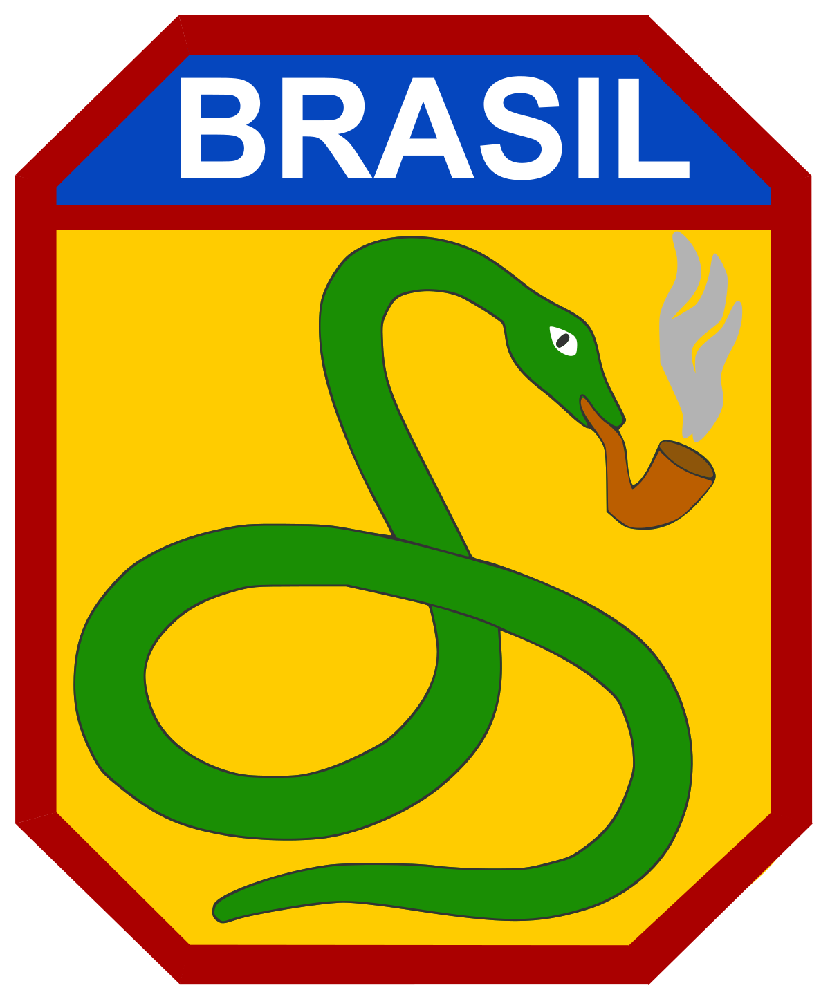
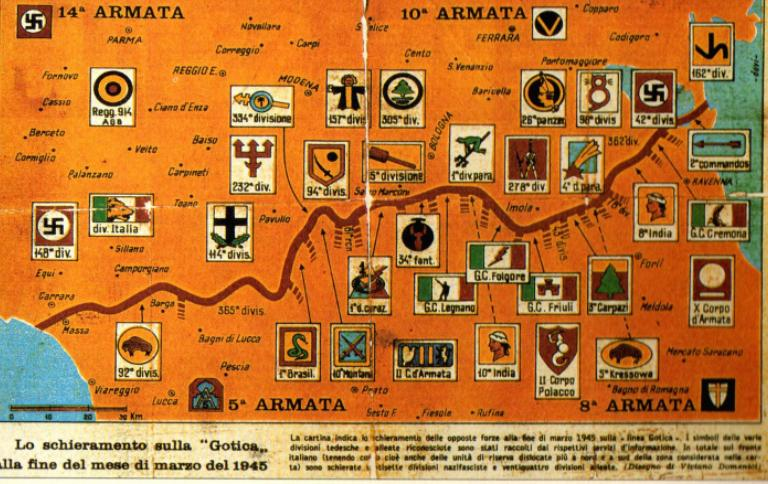
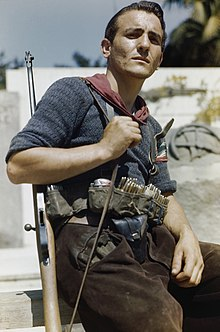

Guerras Brasileiras

|

|
 |
 |
 |
 |
| Revoltas Coloniais | Guerra de Independência | Guerra da Cisplatina | Guerra do Paraguai | Guerra de Canudos | Batalhas da FEB |
| (XVII - XVIII) | (1822 - 1824) | (1825 - 1828) | (1865 - 1870) | (1896 - 1897) | (1942 - 1945) |
| ● | ● | ● | ● | ● | ● |
FEB na Segunda Guerra Mundial
Contextualizando
Um dos conflitos mais recentes da história do Brasil foi o da Segunda Guerra Mundial, que ocorreu por volta da década de 1940. Até então, o Brasil possuía um posicionamento neutro em relação às grandes potências do conflito, porém, foi por volta de 1942 que o Brasil adotou uma posição favorável às forças aliadas.
Uma das justificativas para esse posicionamento foi a de que uma possível invasão americana ocorreria ao Norte e Nordeste do Brasil (com intuito de utilizar os portos e bases aéreas do litoral), caso o governo continuasse neutro. O presidente Getúlio Vargas aproveitou a ocasião para obter a promessa da construção de uma grande usina siderúrgica do Brasil, conhecida hoje como CSN (Companhia Siderúrgica Nacional).
Com um posicionamento tomado, o governo brasileiro oficialmente declarou guerra às potências do eixo (Alemanha, Itália e Japão) e seus aliados, porém as tropas brasileiras só foram mandadas para o front europeu 2 anos após a declaração, em 1944.
Na época, os soviéticos avançavam em direção à Berlim na chamada "Operação Barbarossa", conseguindo vitórias importantes e consecutivas sobre os alemães. Pelo lado ocidental, os aliados haviam retomado a Normandia e começado o processo de retomada da França, juntamente com a invasão da Itália pelo Mar Mediterrâneo. Foi nesse último front que a tropas brasileiras, juntamente com as americanas, recuperaram territórios italianos importantíssimos.
A FEB
A FEB (Força Expedicionária Brasileira) foi criada em 1943, um ano depois da declaração de guerra brasileira às forças do Eixo. Tratava-se de um batalhão de infantaria com mais de 25 mil homens, que tinham o objetivo de integrar as forças aliadas no teatro de guerra europeu. O desembarque das tropas brasileiras só aconteceu, de fato, em julho de 1944, na comuna italiana de Nápoles.
Na época, a FEB era comandada pelo general Zenóbio da Costa, e foi incorporada ao 5º Exército Americano. Essa unidade americana estava integrada a outras na região central da Itália, e tinham um grande objetivo pela frente: romper a Linha Gótica.*
* A Linha Gótica foi um conjunto de fortificações estrategicamente construídas que possuíam o intuito de segurar, ou ao menos retardar, o avanço aliado pelo território italiano. Construída pelos alemães, essa linha ligava de uma ponta à outra os mares Tirreno e Adriático, com uma extensão terrestre de aproximadamente 280 km. Inúmeras batalhas foram travadas ao decorrer da Linha Gótica, e somente em fevereiro de 1945, 8 meses depois de sua criação, houve um rompimento definitivo dessa linha.
Juntamente com o 5º Exército Americano, a FEB foi responsável pela investida na parte mais oeste da linha, com objetivos direcionados a cidades menores, mas muito importantes para o objetivo final. Dentre o período de 8 meses de investida à Linha Gótica (agosto de 1944 - fevereiro de 1945), as tropas brasileiras participarem de várias batalhas, algumas muito famosas que são relembradas até os dias de hoje.
Principais batalhas da FEB
Batalha de Monte Castello (novembro de 1944 - fevereiro de 1945)
Provavelmente uma das batalhas mais famosas, se não a mais famosa, a batalha de Monte Castello foi decisiva para o rompimento da Linha Gótica. Monte Castelo era um dos principais pontos fortificados, e por ficar em terreno elevado, era uma posição bastante favorável aos defensores. Outros fatores, como por exemplo o clima hostil para os brasileiros (de -20ºC), ou equipamentos inferiores, fizeram com que algumas ofensivas à Monte Castelo tenham sido fracassadas.
Por volta de novembro e dezembro de 1944, as tropas brasileiras assumiram quase controle total do ataque. Devido à condições de batalha, como flancos perdidos e contra-ofensivas inesperadas, os planos de tomada ao Monte Castello acabaram frustradas. Foi somente após uma calmaria no tempo de inverno, por volta de fevereiro de 1945, que as forças brasileiras efetuaram um ataque bem sucedido ao monte. Recebendo cobertura da FAB (Força Aérea Brasileira) e dos americanos ao flanco, os pracinhas chegaram ao cume do monte por volta das 17:30h de 21 de fevereiro de 1945, oficializando a tomada do monte e contribuindo fortemente para o rompimento da Linha Gótica.
Batalha de Castelnuovo (março de 1945)
Realizada na forma de cerco, a batalha de Castelnuovo aconteceu próxima ao término da guerra, por volta de março de 1945. Consistiu na tomada da aldeia de Castelnuovo, da comuna de Vergato, por tropas brasileiras e americanas. Constituída de vários planejamentos de cerco, a invasão a Castelnuovo durou 2 dias, e teve 70 baixas no total, todas da FEB. No total. foram aprisionados 98 alemães. Apesar de não ter sido uma das batalhas mais relevantes, a conquista do território de Castelnuovo foi essencial para o desenvolvimento de outras batalhas, e consequentemente para o progresso da quebra da linha Gótica.
Batalha de Montese (abril de 1945)
A batalha de Montese foi a mais sangrenta dentre todas as batalhas travadas pela FEB. Nela, mais de 400 soldados brasileiros foram mortos ou feridos pela mão dos alemães, que defenderam o território com garras e dentes. Por ser um território chave da linha Gótica, os alemães reforçaram ainda mais as defesas da região, complicando ainda mais a investida das tropas brasileiras.
No dia 14 de abril de 1945, após inúmeras patrulhas que visavam quebrar a primeira linha de defesa inimiga, ocorreu o ataque à comuna de Montese. Precedido por um intenso fogo de barragem da artilharia, apoio de blindados e de cortina de fumaça, os brasileiros avançaram em direção à batalha. Por volta das 15 horas, após quase 6 horas de conflito árduo, as tropas da FEB alcançaram seu objetivo, ocupando Montese e capturando mais de 21 mil soldados alemães. É considerada uma das maiores vitórias da FEB, e foi decisiva para o avanço no teatro de guerra italiano.
Batalha de Fornovo (abril de 1945 - maio de 1945)
Juntamente com a Batalha de Montese, foi um grande conflito para a FEB, pois aprisionou quase 15 mil homens e mais de 2000 equipamentos motorizados das forças inimigas. O conflito foi travado pela FEB, aliado de divisões americanas e partigianos *, contra alemães e italianos. Apesar de parecer um conflito sangrento, na verdade foi uma batalha inicial seguida de uma rendição do General Otto Fretter-Pico, que decidiu não por esforços e acabou por optar se entregar.
* Partigianos (figura ao lado) era como eram chamados os cidadãos italianos que eram contra o regime de Mussoulini e faziam parte de uma resistência armada. Muitas vezes combatendo as próprias forças armadas italianas, eles lutavam em prol da libertação da Itália do facismo e apoiavam às forças aliadas. Formados normalmente por civis ou paramiltares, sempre recebiam os aliados com felicidade e lutavam com bravura.